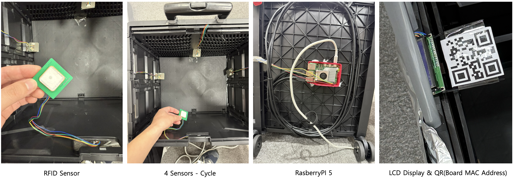
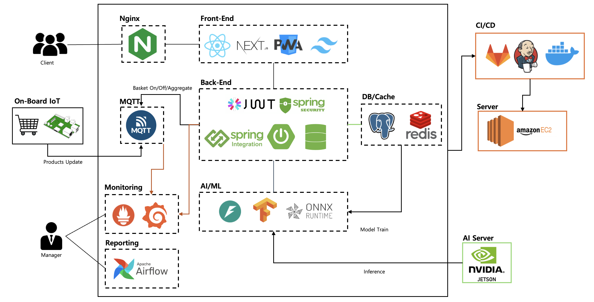
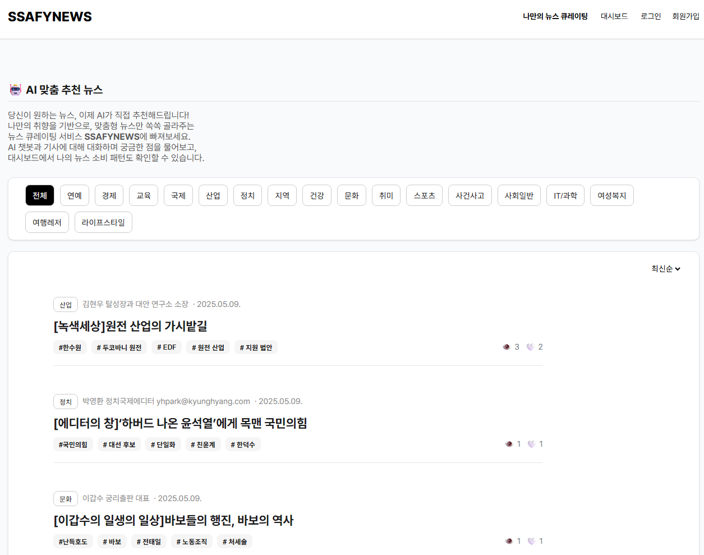
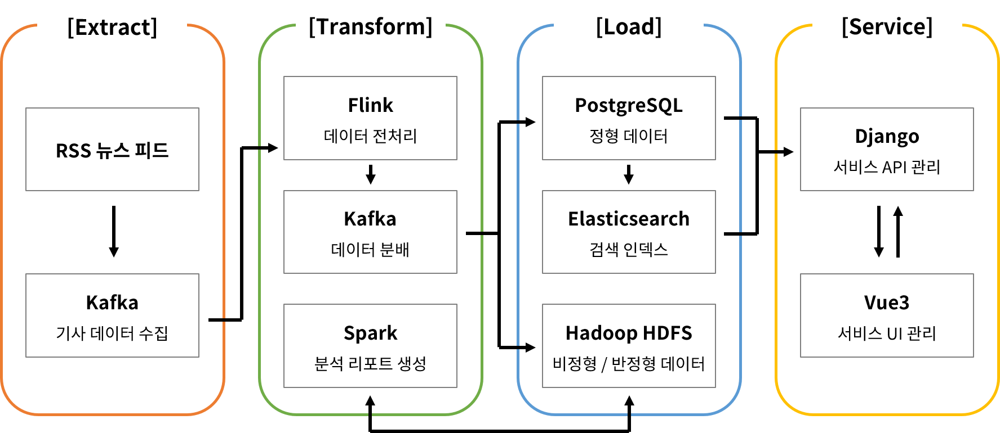
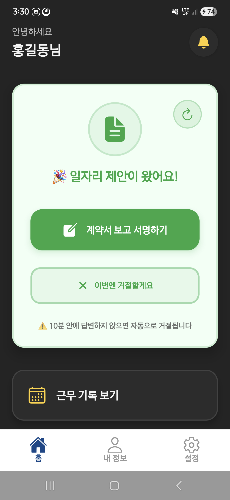
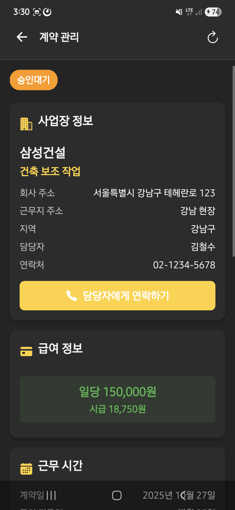
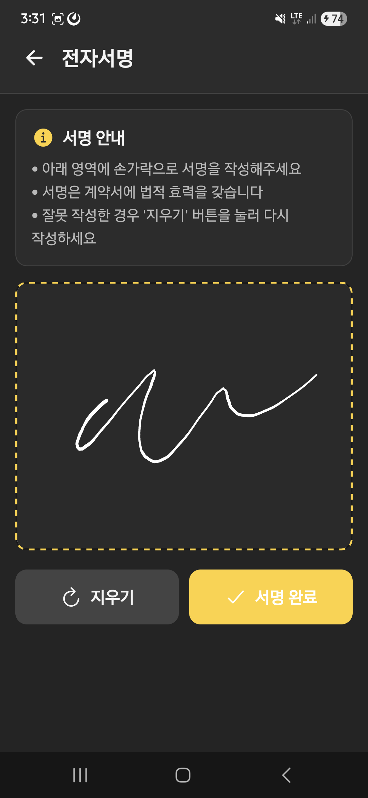
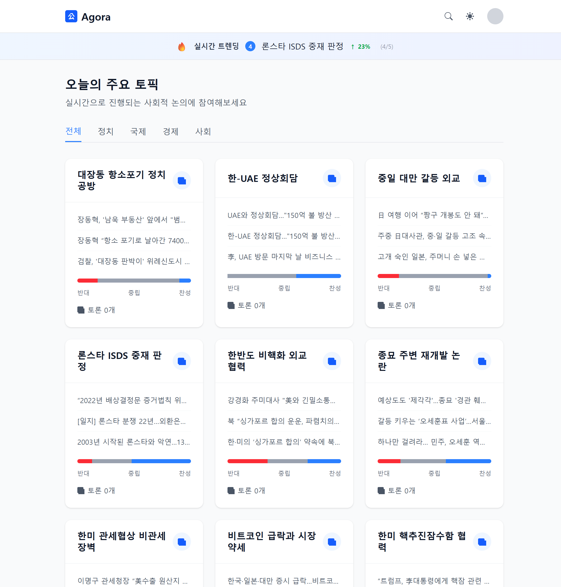
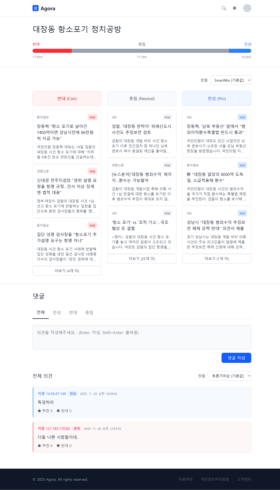

IoT · Data Pipeline · Frontend — End-to-End Developer
Raspberry Pi + RFID 기반 IoT 시스템부터 Airflow/Kafka 데이터 파이프라인,
Next.js/React Native 사용자 인터페이스까지
데이터가 수집되어 사용자에게 전달되기까지 전체 흐름을
이해하고 구현합니다.

Raspberry Pi + YRM1001 RFID + I2C LCD

시스템 아키텍처
초기 구현에서 약한 RFID 신호와 2사이클 연속 감지 대기로 6초 이상 지연이 발생했습니다.
| 항목 | 변경 전 | 변경 후 |
|---|---|---|
| 감지 사이클 | 2사이클 연속 | 1사이클 즉시 |
| 신호 필터링 | 없음 | RSSI ≥ -58 dBm |
| 외부 차단 | 미적용 | 은박 호일 물리적 차폐 |
| 프론트 연동 | 폴링 | SSE 실시간 푸시 |
# mqtt_controller.py - 핵심 설정 sensor_manager = MultiSensorManager( polling_count=15, rssi_threshold=-58 ) cart_manager = CartManager( presence_threshold=1, # 1사이클 즉시 감지 absence_threshold=2, # 제거는 2사이클 확인 rssi_threshold=-58 )
하나의 RFID 리더로는 장바구니 내부를 균일하게 커버하기 어렵고, USB 특성상 리더가 런타임에 분리/재연결되는 상황에 대응해야 했습니다.
1) VID 기반 자동 리더 감지
# sensor_manager.py - USB VID로 RFID 리더 자동 식별 def _get_available_sensor_ports(self) -> List[str]: all_ports = serial.tools.list_ports.comports() return [p.device for p in all_ports if p.vid in (0x11CA, 0x10C4)] # YRM1001 VID
2) 매 사이클 핫플러깅 체크
# 리더 추가/제거 자동 반영 def refresh_readers(self): current = set(self._get_available_sensor_ports()) existing = set(r.port for r in self.readers) # 분리된 리더 정리 for r in [r for r in self.readers if r.port not in current]: r.close(); self.readers.remove(r) # 새 리더 추가 + 기존 설정 자동 적용 for port in (current - existing): reader = RFIDReader(port, reader_id=f"Sensor-{...}") reader.configure_reader(**self._last_config) self.readers.append(reader)
3) 다중 리더 최적 RSSI 선택
# 동일 태그 → 가장 강한 RSSI 채택
for tag_id in detected_tags:
tag_info = reader.get_tag_info(tag_id)
prev = best_tag_info_map.get(tag_id)
if prev is None or tag_info.rssi > prev.rssi:
best_tag_info_map[tag_id] = tag_info
백엔드에서 RFID 시스템을 원격 제어하면서, 장바구니 변경을 실시간 전달해야 했습니다. 무분별한 메시지 발행은 네트워크 부하와 불필요한 DB 쓰기를 유발합니다.
1) MQTT 명령 구독 — 시스템 생명주기 관리
# 명령 수신 콜백
def on_message(client, userdata, msg):
command = parse_command(msg.payload)
if command == "start": start_rfid_system()
elif command == "end": stop_rfid_system()
elif command == "total": display_total(payload)
2) 변경 감지 시에만 MQTT 발행
# 카트 데이터 비교 후 변경 시에만 발행 cart_data = format_cart_for_mqtt(confirmed_items, BASKET_ID) if cart_data != last_published_cart_data: publish_result = mqtt_publish_message(message=cart_data) if publish_result: last_published_cart_data = cart_data # 성공 시에만 갱신
3) 스레딩 모델 — RFID 시스템 격리
MQTT 수신과 RFID 폴링이 서로 블로킹하지 않도록 분리.
threading.Event로 안전한 종료 시그널 전달.

메인 페이지

데이터 파이프라인 구조
"경제" 검색 시 "경제적" 등 파생어 미검색, 오타("겅제") 입력 시 결과 없음. 자동완성 응답이 느리거나 무관한 결과 반환.
Nori 토크나이저(decompound_mode: mixed)로 한글 형태소 분석, Edge N-gram(1~25)으로 접두어 매칭 지원.
| 우선순위 | 방식 | Boost | 용도 |
|---|---|---|---|
| 1 | match_phrase_prefix | 4.0 | 정확한 구문 |
| 2 | nori 형태소 | 3.0 | "경제" → "경제적" |
| 3 | edge_ngram | 2.5 | 접두어 매칭 |
| 4 | fuzzy (동적) | 2.0 | "겅제" → 경제 |
# autocomplete_articles() 내부 — 검색어 길이별 동적 fuzziness if len(query) <= 1: fuzziness_value = 0 # 1글자: 정확 매칭 elif len(query) == 2: fuzziness_value = 1 # 2글자: 1글자 오차 else: fuzziness_value = min(2, len(query) // 3)
실수로 클릭한 기사도 관심사로 반영되고, 좋아하는 기사와 그냥 본 기사의 구분 없이 추천 결과가 사용자 취향을 제대로 반영하지 못했습니다.
# views.py - 핵심 추천 로직
for interaction in interactions:
weight = 2 if interaction.liked else 1
weighted_embeddings.append(embedding * weight)
user_embedding = np.sum(weighted_embeddings, axis=0)
user_embedding /= np.linalg.norm(user_embedding)
similar = Article.objects.annotate(
similarity=CosineDistance('embedding', user_embedding)
).filter(~Exists(user_interactions)).order_by('similarity')[:5]
Airflow가 전체 DAG를 오케스트레이션. Kafka → Flink 실시간 스트림과 Spark 일일 배치 리포트를 하이브리드 운영. 뉴스 분류에 GPT-4o-mini, 벡터화에 text-embedding-3-small 사용.

상태 카드 메인

전자 계약서

전자 서명
앱을 빠르게 껐다 켜면 이전 토큰 삭제와 새 토큰 등록이 동시에 발생하여 토큰이 중복 등록되거나 유실되는 문제가 있었습니다.
// notificationService.ts class NotificationService { private isRegisteringToken = false; private isDeletingToken = false; async registerPushToken(): Promise<void> { if (this.isRegisteringToken || this.isDeletingToken) return; try { this.isRegisteringToken = true; const token = await Notifications.getExpoPushTokenAsync(); const stored = await SecureStore.getItemAsync('pushToken'); if (stored === token.data) return; // 동일 토큰 스킵 await api.post('/notifications/register', { token: token.data }); await SecureStore.setItemAsync('pushToken', token.data); } finally { this.isRegisteringToken = false; } } }
출근 → 배정 대기 → 현장 이동 → 계약 서명 → 근무 → 퇴근까지 각 단계마다 표시할 정보와 가능한 액션이 다릅니다. 개별 화면으로 만들면 뎁스가 깊어지고 필요한 조작이 너무 많아집니다.
6개 상태를 Enum으로 정의하고, 상태별 생성 함수가 현재 상태에 맞는 카드(title, actions)를 자동 생성하여 메인 화면 하나에서 모든 흐름을 처리합니다.
// createStatusCard — switch로 상태별 생성 함수 위임 export const createStatusCard = (status, contract, refreshFns) => { switch (status) { case WorkerStatus.IDLE: return createIdleStatusCard(); // → { title: '오늘의 일자리를 찾아보세요', // primaryAction: { label: '인력사무소 QR 찍기' } } case WorkerStatus.WAITING_CONTRACT: return createWaitingContractStatusCard(contract, refreshFns); // → { title: '일자리 제안이 왔어요!', // primaryAction: '계약서 보고 서명하기', // secondaryActions: ['이번엔 거절할게요'] } case WorkerStatus.WORKING: return createWorkingStatusCard(contract); // ... 6개 상태 × 개별 생성 함수 } };
서버 상태 자동 동기화 — 3가지 트리거로 카드가 실시간 갱신됩니다.
// WorkStatusContext - 자동 동기화 트리거 useAppStateListener(refreshStatus); // 포그라운드 복귀 useNotificationListeners(refreshStatus); // 푸시 알림 수신 useInitialAuthCheck(...); // 로그인 완료

메인 페이지 (ISR 60초)

토픽 상세 (ISR 300초)
메인 토픽 목록은 자주 갱신되지만 매 요청 SSR은 비효율적이고, 토픽/기사 상세는 SEO가 핵심이며, 댓글과 테마 토글은 클라이언트 인터랙션이 중심입니다.
| 전략 | 적용 페이지 | 설정 | 근거 |
|---|---|---|---|
| ISR | 메인, 토픽 목록 | revalidate: 60s | 트래픽 부하 분산 |
| ISR | 찬반 논점 | revalidate: 120s | 중간 빈도 갱신 |
| ISR | 토픽/기사 상세 | revalidate: 300s | SEO + 안정적 캐시 |
| CSR | 댓글, 테마 토글 | ssr: false | Hydration Mismatch 방지 |
// Dynamic Import — CSR 컴포넌트 + Skeleton 로딩
const CommentSection = dynamic(
() => import("./CommentSection"),
{ ssr: false, loading: () => <SkeletonLoader /> }
);
const ThemeToggle = dynamic(
() => import("./ThemeToggle"),
{ ssr: false, loading: () => <div className="w-9 h-9" /> }
);
const TrendingBanner = dynamic(
() => import("@/components/TrendingBanner"),
{ loading: () => <BannerSkeleton /> }
);
// next.config.ts — Router Cache 전략 experimental: { staleTimes: { dynamic: 30, // Dynamic route 30초 캐시 static: 180, // Static route 3분 캐시 }, }
SEO 자동화 — generateMetadata()로 토픽/기사별 Open Graph 메타데이터 동적 생성.
// article/[id]/page.tsx — 기사별 메타데이터 자동 생성
export async function generateMetadata({ params }): Promise<Metadata> {
const articleData = await articleService.getArticleById(id);
return {
title: `${articleData.article.articleTitle} | Agora`,
description: `${title} - ${mediaName}`,
};
}